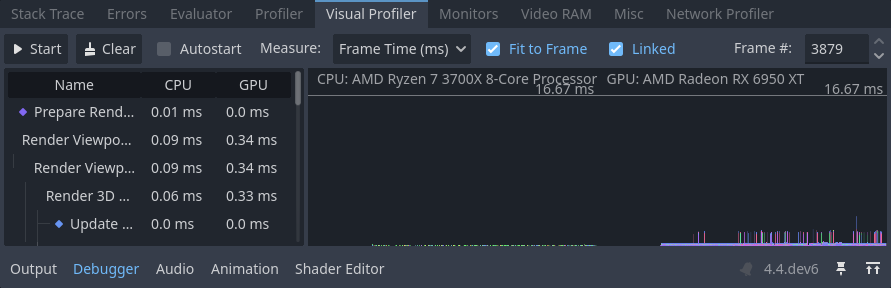
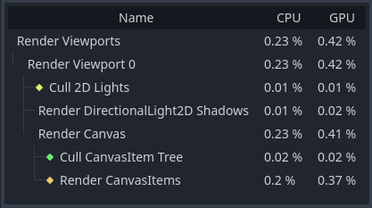
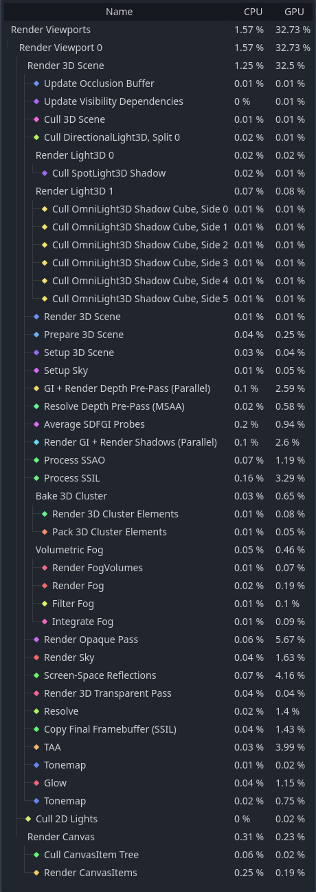

Bảng Debugger
Nhiều công cụ gỡ lỗi của Godot, bao gồm cả debugger, nằm trong bảng debugger ở phía dưới màn hình. Nhấp vào Debugger để mở nó.

Bảng debugger được chia thành nhiều tab, mỗi tab tập trung vào một nhiệm vụ cụ thể.
Stack Trace
Tab Stack Trace tự động mở khi trình biên dịch GDScript gặp một breakpoint trong code của bạn.
Tab này cung cấp cho bạn stack trace, thông tin về trạng thái của đối tượng và các nút để điều khiển việc thực thi chương trình. Khi debugger dừng tại một breakpoint, một mũi tên tam giác màu xanh lá sẽ hiện ở lề (gutter) của trình chỉnh sửa script. Mũi tên này cho biết dòng code mà debugger đã dừng.
Mẹo
Bạn có thể tạo breakpoint bằng cách nhấp vào lề bên trái của trình chỉnh sửa script (bên trái số dòng). Khi rê chuột lên lề này, bạn sẽ thấy một chấm đỏ trong suốt xuất hiện, và nó trở thành chấm đỏ đậm sau khi bạn nhấp để đặt breakpoint. Nhấp lại vào chấm đỏ để xóa breakpoint. Breakpoint tạo theo cách này được giữ lại qua các lần khởi động lại trình chỉnh sửa, kể cả khi script chưa được lưu lúc thoát.
Bạn cũng có thể dùng từ khóa breakpoint trong GDScript để tạo breakpoint được lưu ngay trong script. Khác với breakpoint tạo bằng cách nhấp vào lề, breakpoint dựa trên từ khóa này được giữ nguyên trên các máy khác nhau khi dùng hệ thống quản lý phiên bản.
Bạn có thể dùng các nút ở góc trên bên phải để:
Bỏ qua tất cả breakpoint. Bằng cách đó, bạn có thể giữ lại breakpoint cho các phiên gỡ lỗi sau.
Sao chép thông báo lỗi hiện tại.
Step Into code. Nút này đưa bạn đến dòng code tiếp theo, và nếu đó là một hàm, nó sẽ đi từng dòng bên trong hàm.
Step Over code. Nút này đi đến dòng code tiếp theo nhưng không đi từng dòng bên trong các hàm.
Break. Nút này tạm dừng việc thực thi game.
Continue. Nút này tiếp tục chạy game sau khi dừng tại breakpoint hoặc tạm dừng.
Ghi chú
Hiện chưa hỗ trợ dùng debugger và breakpoint với tool script. Breakpoint đặt trong trình chỉnh sửa script hoặc bằng từ khóa breakpoint sẽ bị bỏ qua. Thay vào đó, bạn có thể dùng các câu lệnh print để hiển thị nội dung biến.
Lỗi
Đây là nơi hiển thị các thông báo lỗi và cảnh báo khi chạy game.
Bạn có thể tắt các cảnh báo cụ thể trong Project Settings > Debug > GDScript.
Evaluator
Tab này chứa một trình đánh giá biểu thức, còn gọi là REPL. Đây là công cụ bổ trợ mạnh hơn cho cây Stack Variables có trong tab Stack Trace.
Khi dự án bị dừng trong debugger (do breakpoint hoặc lỗi script), bạn có thể nhập biểu thức vào ô văn bản ở phía trên. Nếu dự án đang chạy, ô biểu thức sẽ không chỉnh sửa được, nên bạn cần đặt breakpoint trước. Biểu thức có thể được giữ lại qua các lần chạy bằng cách bỏ chọn Clear on Run, nhưng chúng sẽ mất khi thoát trình chỉnh sửa.
Biểu thức được đánh giá bằng ngôn ngữ biểu thức của Godot, cho phép bạn thực hiện phép tính số học và gọi một số hàm trong biểu thức. Biểu thức có thể tham chiếu đến biến thành viên hoặc biến cục bộ trong cùng phạm vi với dòng đặt breakpoint. Bạn cũng có thể nhập giá trị hằng số, nhờ đó dùng nó như một máy tính có sẵn.
Xét script sau:
var counter = 0
func _process(delta):
counter += 1
if counter == 5:
var text = "Some text"
breakpoint
elif counter >= 6:
var other_text = "Some other text"
breakpoint
Nếu debugger dừng ở dòng đầu tiên chứa breakpoint, các biểu thức sau sẽ trả về giá trị khác null:
Biểu thức hằng:
2 * PI + 5Biến thành viên:
counter,counter ** 2,sqrt(counter)Biến cục bộ hoặc tham số hàm:
delta,text,text.to_upper()
Nếu debugger dừng ở dòng thứ hai chứa breakpoint, các biểu thức sau sẽ trả về giá trị khác null:
Biểu thức hằng:
2 * PI + 5Biến thành viên:
counter,counter ** 2,sqrt(counter)Biến cục bộ hoặc tham số hàm:
delta,other_text,other_text.to_upper()
Profiler
Profiler dùng để xem code nào đang chạy trong khi dự án được sử dụng, và nó ảnh hưởng đến hiệu năng như thế nào.
Xem thêm
Hướng dẫn chi tiết về cách dùng profiler có trong trang riêng Profiler.
Visual Profiler
Visual Profiler có thể dùng để theo dõi phần nào tốn nhiều thời gian nhất khi kết xuất một frame lần lượt trên CPU và GPU. Nhờ đó bạn có thể truy tìm nguồn gốc của các điểm nghẽn CPU và GPU tiềm ẩn do kết xuất gây ra.
Cảnh báo
Visual Profiler chỉ đo thời gian CPU dành cho các tác vụ kết xuất, chẳng hạn thực hiện draw call. Visual Profiler không bao gồm thời gian CPU dành cho các tác vụ khác như script và vật lý. Hãy dùng tab Profiler tiêu chuẩn để theo dõi các tác vụ CPU không liên quan đến kết xuất.
Để dùng visual profiler, hãy chạy dự án, chuyển sang tab Visual Profiler trong bảng Debugger phía dưới, rồi nhấp Start:

Tab Visual Profiler sau khi nhấp Start, chờ vài giây rồi nhấp Stop
Mẹo
Bạn cũng có thể đánh dấu Autostart để visual profiler tự động bắt đầu khi dự án được chạy lần sau. Lưu ý rằng trạng thái của ô Autostart không được giữ lại giữa các phiên làm việc của trình chỉnh sửa.
Bạn sẽ thấy các hạng mục và kết quả xuất hiện khi profiler đang chạy. Các đường biểu đồ cũng xuất hiện, bên trái là framegraph của CPU và bên phải là framegraph của GPU.
Nhấp Stop để kết thúc profiling; kết quả vẫn hiển thị nhưng được giữ cố định. Kết quả vẫn còn sau khi dừng dự án đang chạy, nhưng sẽ mất khi thoát trình chỉnh sửa.
Nhấp vào các hạng mục kết quả bên trái để làm nổi bật chúng trên biểu đồ CPU và GPU bên phải. Bạn cũng có thể nhấp vào biểu đồ để di chuyển con trỏ đến một số frame cụ thể và làm nổi bật loại dữ liệu đã chọn trong các hạng mục kết quả bên trái.
Bạn có thể chuyển cách hiển thị kết quả giữa giá trị thời gian (mili giây trên mỗi frame) hoặc phần trăm so với frametime mục tiêu. Cài đặt trình chỉnh sửa debugger/profiler_target_fps điều khiển giá trị frametime mục tiêu theo FPS được chỉ định.
Nếu framerate tăng đột biến trong khi profiling, biểu đồ có thể bị co giãn không hợp lý. Hãy tắt Fit to Frame để biểu đồ phóng to vào phần từ 60 FPS trở lên.
Ghi chú
Hãy nhớ rằng kết quả của Visual Profiler có thể thay đổi rất nhiều tùy theo độ phân giải viewport, vốn được xác định bởi kích thước cửa sổ nếu dùng stretch mode disabled hoặc canvas_items.
Khi so sánh kết quả giữa các lần chạy khác nhau, hãy đảm bảo dùng cùng một kích thước viewport cho tất cả các lần chạy.
Visual Profiler được hỗ trợ với mọi phương thức kết xuất (Forward+, Mobile hoặc Compatibility), nhưng các hạng mục được báo cáo sẽ khác nhau tùy theo phương thức kết xuất hiện tại cũng như các tính năng đồ họa đang bật. Ví dụ, khi dùng Forward+, một scene 2D đơn giản có ánh sáng đổ bóng sẽ cho ra các hạng mục sau:

Kết quả ví dụ từ một scene 2D trong Visual Profiler
Một ví dụ khác với Forward+: một scene 3D có ánh sáng đổ bóng và bật nhiều hiệu ứng sẽ cho ra các hạng mục sau:

Kết quả ví dụ từ một scene 3D trong Visual Profiler
Hãy để ý rằng trong ví dụ 3D, một số hạng mục có thêm (Parallel) ở cuối tên. Điều này cho thấy nhiều tác vụ đang được thực hiện song song trên GPU. Nhìn chung, điều đó có nghĩa là chỉ tắt một trong các tính năng liên quan sẽ không cải thiện hiệu năng nhiều như mong đợi, vì tác vụ còn lại vẫn phải được thực hiện tuần tự.
Ghi chú
Visual Profiler không được hỗ trợ khi dùng renderer Compatibility trên macOS, do giới hạn của nền tảng.
Network Profiler
Network Profiler chứa danh sách tất cả các node giao tiếp qua multiplayer API, và với mỗi node là một số bộ đếm lượng tương tác mạng đến và đi. Nó cũng có đồng hồ đo băng thông hiển thị tổng mức sử dụng băng thông tại bất kỳ thời điểm nào.
Ghi chú
Đồng hồ đo băng thông không tính đến hệ thống nén riêng của API Multiplayer cấp cao. Điều này có nghĩa là việc thay đổi thuật toán nén sẽ không làm thay đổi các chỉ số mà đồng hồ đo băng thông báo cáo.
Monitor
Monitor là các biểu đồ thể hiện nhiều khía cạnh của game khi đang chạy, như FPS, mức sử dụng bộ nhớ, số node trong scene, v.v. Tất cả monitor đều tự động ghi lại số liệu, nên kể cả khi một monitor không được mở trong lúc game chạy, bạn vẫn có thể mở nó sau và xem các giá trị đã thay đổi như thế nào.
Xem thêm
Ngoài các performance monitor mặc định, bạn cũng có thể tạo performance monitor tùy chỉnh để theo dõi các giá trị bất kỳ trong dự án.
Video RAM
Tab Video RAM hiển thị mức sử dụng video RAM của game khi đang chạy. Nó cung cấp danh sách mọi resource sử dụng video RAM theo đường dẫn resource, loại resource, định dạng và lượng Video RAM mà resource đó đang dùng. Ngoài ra còn có tổng mức sử dụng video RAM ở góc trên bên phải của bảng.

Khác
Tab Misc chứa các công cụ để xác định các control node bạn đang nhấp vào khi chạy:
Clicked Control cho bạn biết node được nhấp nằm ở đâu trong scene tree.
Clicked Control Type cho bạn biết kiểu của node bạn đã nhấp.